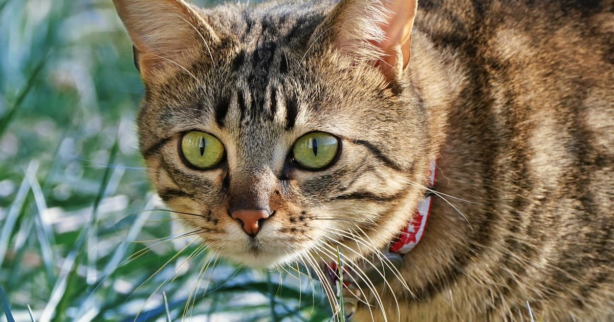

Sim, a coleira GPS funciona em gatos, e o mecanismo é o mesmo usado em cães: um rastreador via satélite, complementado por Wi-Fi e rede móvel, informa a posição do animal por aplicativo. Mas o comportamento natural do gato muda o que você deve esperar do dispositivo na prática.
Gatos são naturalmente exploradores e entendem a vizinhança, não só a casa, como seu território — em uma noite, um gato pode circular em um raio de até 3 km de casa (achados de comportamento felino compilados por Polipet, retrieved 2026-08-22). O período de cio também é um gatilho comum de fuga. Isso significa que, diferente do cão que costuma se afastar em linha mais previsível, o gato pode se esconder em vãos estreitos — embaixo de carros, dentro de dutos, atrás de muros — onde o sinal de GPS por satélite é mais fraco e o dispositivo passa a depender mais do Wi-Fi ou da rede móvel para estimar a posição.
A duração da bateria em coleiras GPS para gato varia de 2 a 14 dias, dependendo do padrão de uso e da frequência de atualização configurada no app (comparativos de mercado consultados por Patas da Casa, retrieved 2026-08-22). Configurar uma frequência de atualização mais espaçada aumenta a autonomia, mas reduz a precisão em tempo real — uma troca que vale ajustar conforme a rotina do seu gato (mais frequente se ele sai bastante, mais espaçada se costuma ficar por perto).
O recurso de definir um limite de distância e receber alerta quando o animal ultrapassa essa marca está disponível em modelos voltados a gatos, com atualização de posição a cada poucos segundos em alguns modelos e precisão métrica em condições boas de sinal (mesma fonte Patas da Casa citada acima, retrieved 2026-08-22).
veja como funciona e configurar a cerca virtual (o processo de configuração é o mesmo, independente da espécie)
Vale reforçar: o microchip identifica o gato caso ele seja encontrado por terceiros e levado a uma clínica, mas não informa onde ele está agora. A coleira GPS é o que permite agir antes disso ser necessário.
compare com a opção de microchip
A coleira GPS funciona em gatos com a mesma tecnologia usada em cães, mas o comportamento territorial felino — raio de deslocamento maior à noite e tendência a se esconder em espaços apertados — exige atenção redobrada a peso do dispositivo, engate de segurança e configuração de frequência de atualização para equilibrar autonomia de bateria com precisão.
volte ao guia completo de coleira GPS para pet
Escrito pela Equipe Smart Pet Gadgets, redação especializada em comparativos de produtos pet no mercado brasileiro. Veja nossa política editorial e como verificamos as fontes citadas neste artigo.
🐾 Confira o preço e a disponibilidade atual no Mercado Livre.
Ver no Mercado Livre →Link de afiliado: podemos receber uma comissão por compras feitas através deste link, sem custo adicional para você.
Nildo Alves — curadoria de produtos pet no Smart Pet Gadgets. Testa e pesquisa produtos para cães e gatos, cruzando especificações de fabricante com boas práticas veterinárias e dados de mercado.
Sobre o Smart Pet Gadgets · Contato · Política editorial e de afiliados